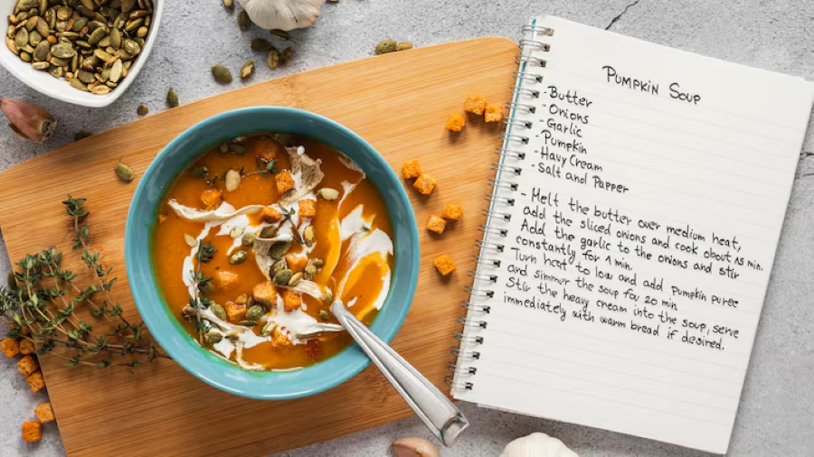

Home
Bem-vindo a um Site de Receitas Culinárias
Este site apresenta uma variação de receitas simples, práticas e fáceis de preparar.
Cada receita apresenta os ingredientes necessários e o modo de preparação de forma simples e direta.
O conteúdo do site abrange diferentes tipos de pratos, desde refeições do dia a dia até sobremesas e
pequenas refeições. As receitas estão organizadas de forma estruturada, permitindo uma consulta
rápida e facilitando a sua utilização.
